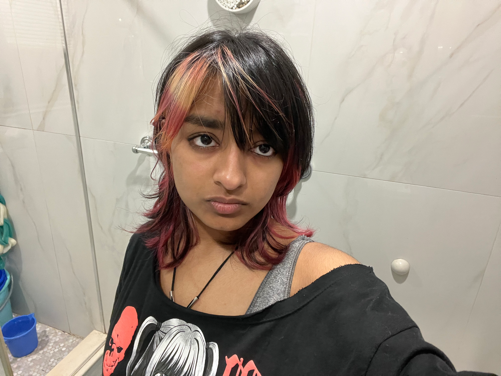

Ayndrila Paul
Student Developer/ Game Designer at Thomas A. Edison CTE High School
I am a Junior who is passionate about game design, creating websites, and programming. I like to create fun games and build on them through testing and feedback.
Links
Add your links from the Curator Guide.
Featured Projects
Each project includes an embed and a reflection from your Curator Guide.
Holidays Drawing Project
I wanted to feature this project as I felt that I had the freedom to create whatever I wanted and how to create it in the most efficient way possible. I am proud of this work because it shows my understanding of loops and how canvas operations work. I also got to use my creativity to make a drawing using code.
Skills: Python
CFU 13 - Happy Dots
This project shows the early stages of me learning what canvas operators do and how they work. Here I attempt to make a smiley face using only dots. I chose to feature this project because it took a lot of time and effort for me to make the face using individual dots that I had to plot.
Skills: Python